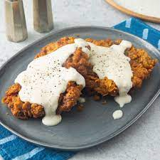

Chicken Fried Steak

Chicken Fried Steak takes a little more time
than the other quick recipes found here,
but it is definitly worth the time if you are
in the mood for some great comfort food.
This recipe is only for the steak itself.
There are many great recipes and even some
easy store bought mixes for the gravy.
Additionally this recipe pairs very well with
many different side dishes. If you are looking
to really hit that comfort food spot I suggest
adding some scalloped or mashed potatos to
really knock you into food bliss!
Ingredients
There are only a few ingredients involved
but the preparation is key.
- Cubed Steak
- Flour
- Eggs
- Panko bread crumbs
- Oil
Steps
- Ready the flour, egg, and bread
crumbs into separate containers,
large enough to accommodate your
selected steaks.
- Head oil in a frying pan, enough to cover
at least half of the steak.
- Season the flour generously with pepper,
salt, garlic powder, and your choice of
steak seasoning.
- Place the steak into the flour container
and coat completely.
- Move the steak into the egg container,
coating completely.
- Move the steak into the bread crumbs
and press the crumbs into the steak, making
sure to creat a good breading.
- Carefully add the steak to the oil, browning on both sides.
- Move the cooked steak to a plate and top with country gravy